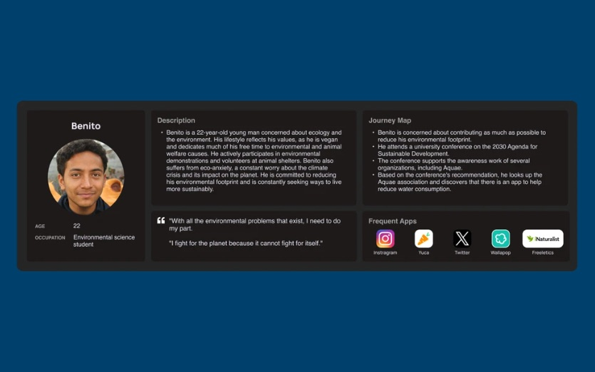
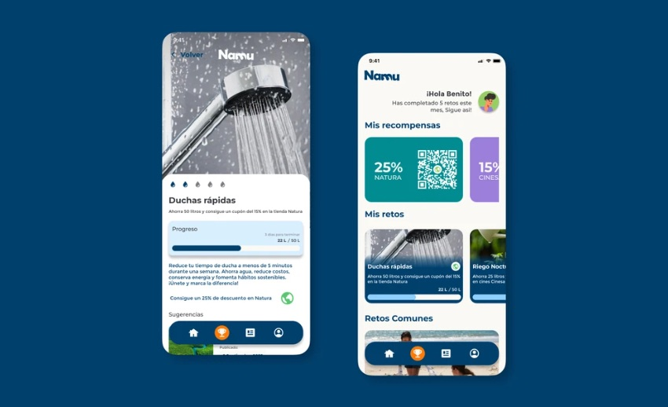
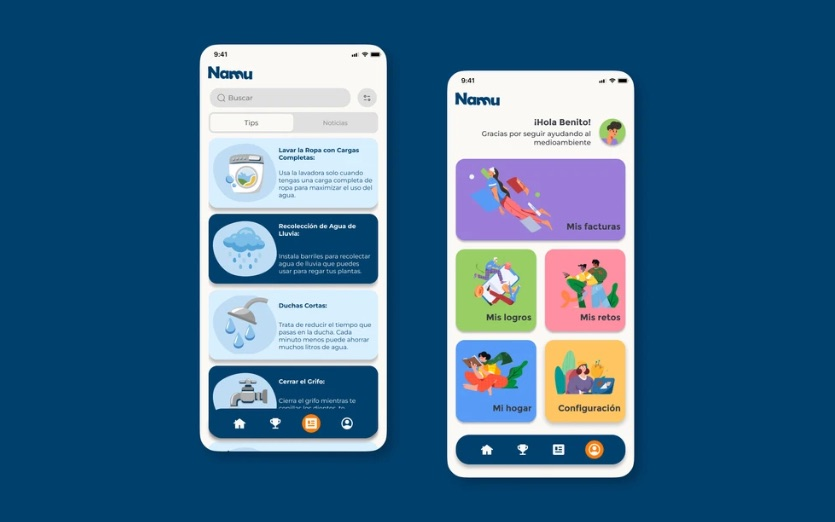

Namu
Making household water use visible, and saving it a habit. Hacer visible el consumo de agua en casa y convertir el ahorro en hábito.

ContextContexto
Water is getting scarcer, but at home it still feels unlimited, because nobody sees how much they use.
El agua es cada vez más escasa, pero en casa sigue pareciendo ilimitada, porque nadie ve cuánta gasta.
Population growth, urbanisation and climate change are pushing demand up. Namu began as a team project driven by a shared concern: domestic water waste, and how little most people know about their own consumption.
El crecimiento de la población, la urbanización y el cambio climático disparan la demanda. Namu nació como un proyecto en equipo a partir de una preocupación común: el desperdicio de agua en casa y lo poco que sabemos de nuestro propio consumo.
ChallengeReto
Reduce household water consumption by making it visible, then keep people motivated long enough for saving to become a habit.
Reducir el consumo de agua en casa haciéndolo visible y mantener la motivación el tiempo suficiente para que ahorrar se convierta en hábito.
The sprintEl sprint
- Kickoff and researchKickoff e investigación
Roadmap, goals and desk research on water use and waste.
Hoja de ruta, objetivos e investigación sobre consumo y desperdicio de agua.
- DefineDefinir
Sprint questions, "How might we…" statements, personas and a journey map, then team voting.
Preguntas del sprint, "¿Cómo podríamos…?", personas y journey map, y votación en equipo.
- IdeateIdear
Lightning demos and Crazy 8's, then a vote on which ideas went into the prototype.
Lightning demos y Crazy 8's, y votación de las ideas que pasaban al prototipo.
- StoryboardStoryboard
Main flows sketched as a storyboard, roles and an action plan assigned.
Flujos principales en un storyboard, con roles y plan de acción asignados.
- Design system and wireframesDesign system y wireframes
Colour, type and components defined first, then wireframes for every screen.
Primero color, tipografía y componentes; después, wireframes de cada pantalla.
- Test and presentTestear y presentar
User tests on clarity and ease of use, then refinements and a final presentation to stakeholders.
Tests con usuarios sobre claridad y facilidad de uso, ajustes y presentación final a stakeholders.

SolutionSolución
Namu tracks consumption in real time, connects to the water bill, and turns saving into personal and shared challenges. Rewards come from partner discounts, and a community area shows that saving is something people do together.
Namu mide el consumo en tiempo real, se conecta a la factura del agua y convierte el ahorro en retos personales y compartidos. Las recompensas son descuentos en comercios asociados, y una zona de comunidad muestra que ahorrar es algo que se hace en grupo.


TakeawaysAprendizajes
A tight sprint forces decisions. Research early on shaped which features made the cut, and testing confirmed that seeing consumption in real numbers is what changes behaviour. The economic savings matter as much as the environmental ones.
Un sprint corto obliga a decidir. La investigación del principio marcó qué funcionalidades entraban, y los tests confirmaron que ver el consumo en cifras reales es lo que cambia el comportamiento. El ahorro económico pesa tanto como el medioambiental.